Histoire et éducation à la citoyenneté
03 / 12 réalité sociales
Une première expérience de démocratie
Ve siècle av. J.-C. · La participation des citoyens à la vie politique
- cité-État
- citoyen
- démocratie
- éducation
- espace privé
- espace public
- institution
- philosophie
- pouvoir
- régime politique
Mise en contexte
La démocratie est un régime politique qui repose sur la reconnaissance que la souveraineté du pouvoir appartient aux citoyens. Au 5e siècle av. J.-C., Athènes établit une démocratie originale. L'étude des institutions de cette cité-État et des limites de son expérience met en relief les grands principes de la démocratie et permet de saisir la nature particulière des régimes politiques démocratiques.
La Grèce, un monde de cités-États
La Grèce se situe dans le sud-est de l'Europe actuelle. Cette région est caractérisée par un relief montagneux et accidenté, avec de nombreuses chaînes de montagnes qui divisent le territoire en petites vallées et en bassins. Ces caractéristiques géographiques ont favorisé l'isolement et l'indépendance des différentes cités-États, comme Athènes, Sparte et Thèbes, chacune développant sa culture et son propre système politique.
La Grèce antique n'était donc pas unifiée : elle était plutôt composée d'une multitude de cités-États indépendantes, souvent en conflit les unes avec les autres. Le terrain montagneux et la présence de nombreuses îles ont aussi joué un rôle important dans le développement de la navigation et du commerce maritime, éléments centraux de l'économie grecque antique.
L'importance des mers Égée, Ionienne et Méditerranée
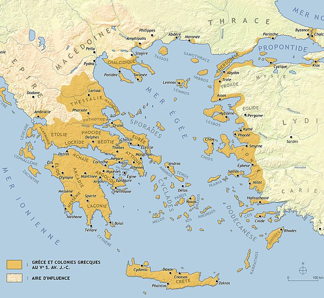
La Grèce antique était entourée de plusieurs mers importantes : la mer Égée à l'est, la mer Ionienne à l'ouest et la mer Méditerranée au sud. Ces mers étaient essentielles pour le commerce, la communication et la guerre.
La mer Égée, parsemée d'innombrables îles, était particulièrement importante pour la civilisation grecque. Elle a facilité les échanges culturels et commerciaux entre les différentes cités-États et d'autres régions telles que l'Égypte et la Phénicie, ainsi que les civilisations du Proche-Orient. La mer Ionienne, à l'ouest, a ouvert des routes vers l'Italie actuelle et vers l'ouest de la Méditerranée. Ces mers ont aussi joué un rôle important dans les conflits militaires, notamment durant les guerres médiques et la guerre du Péloponnèse.
L'Attique et le Péloponnèse
L'Attique, une région centrée autour de la cité d'Athènes, était l'une des régions les plus influentes de la Grèce antique. Située au sud-est de la péninsule balkanique, elle bordait la mer Égée et bénéficiait d'un climat méditerranéen favorable à l'agriculture, en particulier la culture de l'olive et de la vigne. L'Attique était renommée pour ses ressources en argent, provenant des mines du Laurion, qui ont joué un rôle clé dans le financement de la puissance navale athénienne.
Le Péloponnèse, une large péninsule reliée au reste de la Grèce par l'isthme de Corinthe, était une autre région majeure de la Grèce antique. Divisé en plusieurs royaumes et cités-États, dont la plus célèbre est Sparte, le Péloponnèse avait un terrain plus varié et fertile que l'Attique. La région était connue pour sa force militaire, en particulier les hoplites spartiates. Sa situation géographique et ses ressources naturelles en faisaient une zone stratégiquement et économiquement importante.
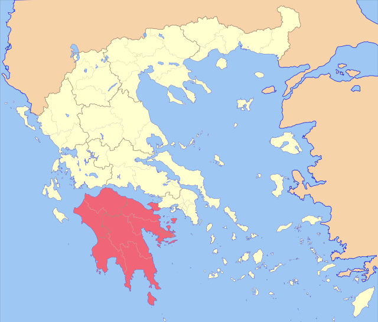
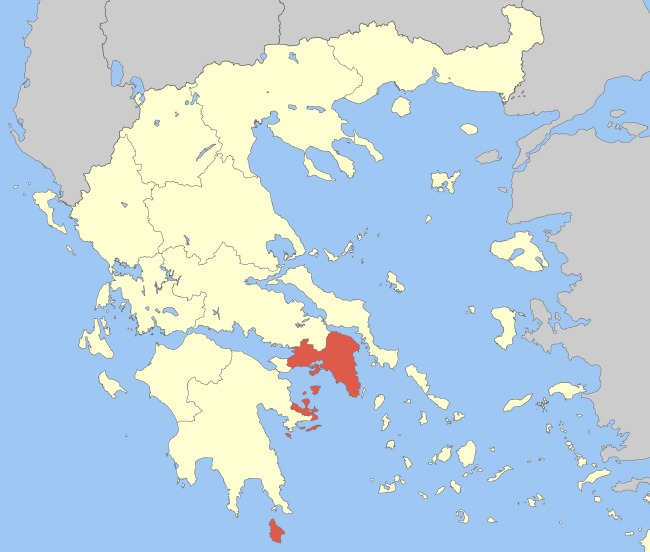
Le monde grec sur une carte
La carte interactive rassemble ces repères : les principales cités grecques du 5e siècle av. J.-C., leurs colonies et leurs grands sanctuaires, les mers qui les relient et les régions que dessine le relief. Une carte muette permet ensuite de vérifier qu'on sait situer les mers et les cités.
Les cités grecques et leurs mers, vers -450
Choisis un lieu
Sur cette carte
Choisis un lieu sur la carte ou dans la liste. Les cadres pointillés agrandissent la carte.
Aujourd'hui. La capitale de la Grèce. L'Acropole et le Parthénon dominent toujours la ville.
Aujourd'hui. Sparti, une petite ville du sud du Péloponnèse, est bâtie tout près des ruines antiques.
Aujourd'hui. Depuis 1893, un canal traverse l'isthme. La ville moderne est bâtie à quelques kilomètres du site antique.
Aujourd'hui. Thiva, une ville de Béotie bâtie sur le site antique.
Aujourd'hui. Argos est l'une des plus anciennes villes de Grèce encore habitées.
Aujourd'hui. L'île de Milos. C'est là qu'on a découvert, en 1820, la célèbre statue de la Vénus de Milo.
Aujourd'hui. Une île grecque. La grande porte d'un temple jamais terminé, commencé vers -530, domine encore son port.
Aujourd'hui. Une île grecque toute proche de la côte turque. Le port de Pythagorio porte le nom de Pythagore.
Aujourd'hui. Mytilène est toujours la principale ville de l'île de Lesbos.
Aujourd'hui. Ses ruines, en Turquie, sont maintenant à plusieurs kilomètres de la mer : les alluvions du fleuve Méandre ont comblé le golfe où se trouvait son port.
Aujourd'hui. Le mur qui porte le Code de Gortyne se visite toujours sur le site antique, au centre de la Crète.
Aujourd'hui. Istanbul, la plus grande ville de Turquie.
Aujourd'hui. L'île de Corfou, en Grèce.
Aujourd'hui. Syracuse, en Sicile (Italie). Son théâtre grec accueille encore des spectacles.
Aujourd'hui. Taranto, une ville portuaire du sud de l'Italie.
Aujourd'hui. Marseille, en France. Son Vieux-Port occupe l'emplacement du port grec.
Aujourd'hui. Ses ruines, en Libye, sont inscrites au patrimoine mondial de l'UNESCO.
Aujourd'hui. Il n'en reste que quelques vestiges, dans les champs du delta du Nil, en Égypte.
Aujourd'hui. Le site, au flanc du mont Parnasse, est inscrit au patrimoine mondial de l'UNESCO.
Aujourd'hui. La flamme des Jeux olympiques modernes y est allumée avant chaque édition.
Aujourd'hui. Une île presque inhabitée, devenue un vaste site archéologique inscrit au patrimoine mondial de l'UNESCO.
À savoir. Son nom vient du latin et signifie « au milieu des terres ». Les Grecs, eux, l'appelaient simplement « la mer ».
Aujourd'hui. Elle porte toujours le même nom et sépare la Grèce de la Turquie.
Aujourd'hui. Elle porte toujours le même nom et sépare la Grèce du sud de l'Italie.
Aujourd'hui. Elle sépare l'Italie des côtes des Balkans, de la Slovénie à l'Albanie.
Aujourd'hui. Elle baigne la côte ouest de l'Italie, la Corse, la Sardaigne et la Sicile.
Aujourd'hui. C'est la mer Noire. Elle borde la Turquie, la Bulgarie, la Roumanie, l'Ukraine, la Russie et la Géorgie.
Aujourd'hui. C'est la mer de Marmara, entièrement en Turquie. L'Hellespont s'appelle maintenant le détroit des Dardanelles.
Aujourd'hui. Depuis 1893, le canal de Corinthe traverse l'isthme et relie ce golfe au golfe Saronique.
Aujourd'hui. Le Pirée est toujours le port d'Athènes et l'un des plus grands ports de la Méditerranée.
Aujourd'hui. Le nord-ouest de la Grèce et le sud de l'Albanie.
Aujourd'hui. Une grande région du nord de la Grèce. Un pays voisin porte aussi ce nom : la Macédoine du Nord.
Aujourd'hui. Une région touristique du nord de la Grèce. Sur la pointe du mont Athos vivent encore des moines orthodoxes.
Aujourd'hui. Elle est partagée entre la Grèce, la Bulgarie et la Turquie.
Aujourd'hui. Une région agricole du centre de la Grèce. Le mont Olympe, à sa limite nord, est le plus haut sommet du pays.
Aujourd'hui. L'ouest de la Grèce continentale.
Aujourd'hui. L'ouest de la Grèce centrale, autour de la ville de Missolonghi.
Aujourd'hui. Ces terres font partie de la Grèce centrale.
Aujourd'hui. Une région de la Grèce centrale. Les ruines de Delphes y attirent de nombreux visiteurs.
Aujourd'hui. Une région agricole au nord-ouest d'Athènes.
Aujourd'hui. La région d'Athènes, la plus peuplée de la Grèce.
Aujourd'hui. Mégare est une petite ville de la région d'Athènes.
Aujourd'hui. Des ponts relient l'île au continent, à Chalcis.
Aujourd'hui. Le canal de Corinthe, ouvert en 1893, coupe l'isthme.
Aujourd'hui. Patras, troisième ville de la Grèce, se trouve dans cette région.
Aujourd'hui. L'ouest du Péloponnèse. Le site d'Olympie est inscrit au patrimoine mondial de l'UNESCO.
Aujourd'hui. Une région peu peuplée du centre du Péloponnèse.
Aujourd'hui. Le grand théâtre antique d'Épidaure accueille encore des spectacles chaque été.
Aujourd'hui. Une région du sud-ouest du Péloponnèse, connue pour les olives de Kalamata.
Aujourd'hui. La ville de Sparti et le port de Gythio se trouvent dans cette région.
Aujourd'hui. Santorin, Mykonos et Naxos attirent chaque année de très nombreux touristes.
Aujourd'hui. La plus grande île de la Grèce. On y visite le palais de Cnossos, près d'Héraklion.
Aujourd'hui. La côte ouest de la Turquie, face à l'île grecque de Lesbos.
Aujourd'hui. La région d'Izmir, en Turquie. Chios et Samos sont des îles grecques.
Aujourd'hui. Bodrum, l'ancienne Halicarnasse, est une station balnéaire de Turquie.
Clique sur une région. Chaque couleur réunit les régions d'un même ensemble. Les limites sont approximatives : elles ont souvent changé au fil des guerres.
Fond de carte : Natural Earth, domaine public. Côtes d'aujourd'hui, sites et limites approximatifs : Milet et Éphèse, par exemple, se trouvent maintenant à plusieurs kilomètres de la mer.
De l'oligarchie à la démocratie
Au 8e siècle av. J.-C. est fondée la cité-État d'Athènes, une cité autonome, la polis, qui englobe non seulement la ville d'Athènes, mais également les territoires avoisinants. Plutôt qu'être dirigée par un roi, Athènes est alors gouvernée par un petit groupe de puissants aristocrates : c'est ce qu'on appelle une oligarchie. C'est au cours de cette période oligarchique que se mettent en place les fondements de la démocratie athénienne. Des réformateurs instaurent progressivement des mesures politiques et législatives qui favoriseront la participation des citoyens à la vie publique.
D'abord, à la fin du 7e siècle av. J.-C., Dracon rédige un code de lois qui constitue une première tentative d'instituer un droit écrit commun pour tous les citoyens. Au début du 6e siècle, c'est au tour de Solon de mettre en oeuvre des réformes judiciaires et politiques, notamment l'abolition de l'esclavage pour dettes, et il supprime la dépendance des citoyens pauvres envers les riches aristocrates. Enfin, Clisthène remanie les institutions politiques d'Athènes et permet la naissance de la démocratie. Cette réforme affaiblit la puissance de l'ancienne aristocratie et permet véritablement l'isonomie, c'est-à-dire l'égalité de tous les citoyens devant la loi, qu'ils soient riches ou pauvres.
Le 5e siècle : les guerres médiques et l'âge d'or
La Grèce antique, qui s'étend de -1200 à -146, est une période clé de l'histoire, célèbre pour ses contributions majeures dans des domaines variés comme l'art, la philosophie, la science et la politique. Une des époques les plus brillantes de cette période est l'âge d'or d'Athènes, au 5e siècle av. J.-C. Le schéma suivant en rassemble les grands événements.
Les guerres médiques

Source
Copy of Ktesilas, Pericles Pio-Clementino Inv269, Wikimedia Commons. Licence : Domaine public.Entre -499 et -479, la Grèce est le théâtre de conflits majeurs : les guerres médiques, qui opposent les cités-États grecques, principalement Athènes et Sparte, à l'immense Empire perse. Les Grecs réussissent à repousser les invasions perses durant les batailles célèbres de Marathon, des Thermopyles et de Salamine.
À Marathon, en -490, l'armée athénienne compte environ 10 000 hoplites, des citoyens-soldats lourdement armés qui forment la force principale de l'infanterie, rejoints par environ 1 000 soldats de la cité de Platée. En face, l'armée perse aligne de 25 000 à 50 000 hommes, fantassins légers et cavaliers. La victoire du général athénien Miltiade contre un ennemi bien plus nombreux frappe les esprits. Dix ans plus tard, la flotte grecque écrase la flotte perse dans le détroit de Salamine. Ces affrontements prouvent la détermination et le courage des Grecs et renforcent le sentiment d'unité entre les cités-États.
L'âge d'or d'Athènes
Athènes tient son âge d'or en partie de Périclès, un homme politique, mais aussi un stratège militaire. Sous son administration, la cité connaît un essor culturel et politique remarquable. C'est une époque de développement artistique et intellectuel intense : des figures célèbres comme les dramaturges Euripide et Sophocle, le philosophe Socrate et le sculpteur Phidias sont actives à cette période, et leurs oeuvres continuent d'influencer notre monde aujourd'hui. Périclès fait aussi reconstruire les temples de l'Acropole détruits par les Perses, dont le célèbre Parthénon, et verse une indemnité aux citoyens pauvres pour qu'ils puissent participer à la vie politique.
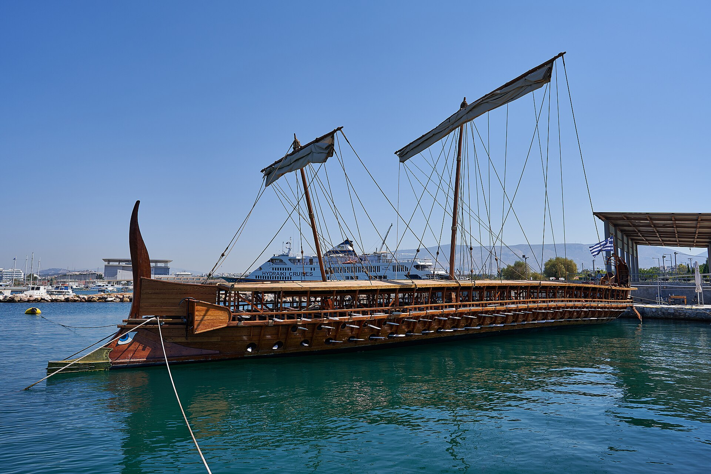
Source
George E. Koronaios, Trireme Olympias on September 1, 2020, Wikimedia Commons. Licence : Creative Commons BY-SA 4.0.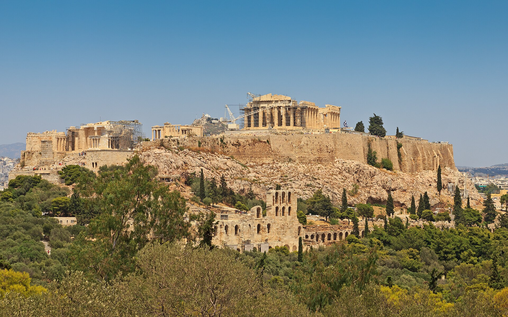
Source
A.Savin, Attica 06-13 Athens 50 View from Philopappos - Acropolis Hill, Wikimedia Commons. Licence : Creative Commons BY-SA 3.0.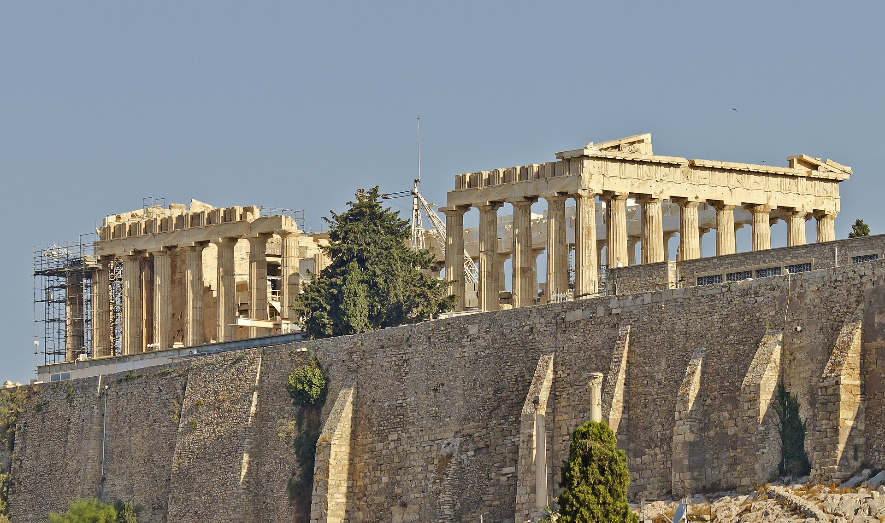
Source
A.Savin, Attica 06-13 Athens 35 Parthenon, Wikimedia Commons. Licence : Creative Commons BY-SA 3.0.Visites virtuelles d'Athènes et d'Olympie
La démocratie athénienne
Le mot démocratie signifie le pouvoir, krâtos, au peuple, dêmos. Inventée par les Athéniens en même temps que le régime politique qui porte ce nom, elle apparaît en -507, lorsque la cité d'Athènes renverse la tyrannie. À l'époque, la démocratie signifie donc le pouvoir du peuple, qui doit assurer l'intérêt général. C'est aussi la possibilité pour tous les citoyens de participer aux différentes institutions de la cité.
Contrairement à notre démocratie représentative, le régime politique athénien est une démocratie directe, c'est-à-dire que les citoyens peuvent participer directement aux décisions d'ordre public. Les principales institutions politiques assurent une participation équitable à la gouvernance de la cité, notamment en octroyant une grande place au tirage au sort et, par conséquent, à l'intervention des dieux lors de la nomination aux charges publiques.
Dans une démocratie directe, les décisions sont prises directement par le peuple, sans intermédiaires ni représentants : les citoyens participent activement à la prise de décision par des votes sur des questions précises. Dans une démocratie représentative, les citoyens élisent plutôt des représentants pour prendre des décisions en leur nom, pour un mandat fixe. La majorité des démocraties modernes, comme le Canada, les États-Unis ou la France, sont des démocraties représentatives.
Les institutions politiques d'Athènes
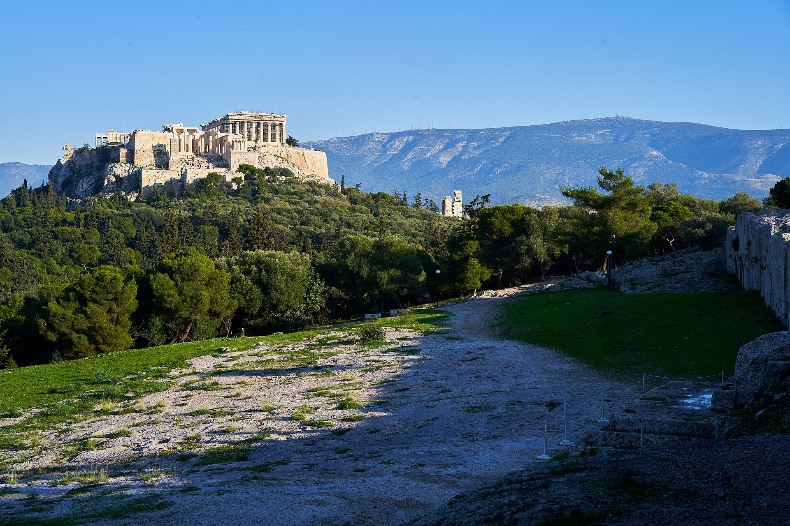
Source
George E. Koronaios, The Acropolis and the Orator's Bema on the Pnyx on December 16, 2019, Wikimedia Commons. Licence : Creative Commons BY-SA 4.0.La séparation des pouvoirs, bien que proposée par le philosophe Montesquieu au 18e siècle, est apparue durant la Grèce antique dans la cité-État d'Athènes. Le pouvoir législatif consiste en l'adoption des lois, les règles que doivent suivre impérativement l'ensemble des citoyens; au Canada, il est détenu par la Chambre des communes, où siègent les élus du peuple qu'on nomme députés. Le pouvoir exécutif est du ressort du gouvernement : sa fonction est d'exécuter les lois. Le pouvoir judiciaire est du ressort des tribunaux : il fait respecter la loi et juge ceux qui ne l'auraient pas respectée.
L'ecclésia, l'assemblée de tous les citoyens, se réunit une quarantaine de fois par année sur la colline de la Pnyx. Chaque citoyen peut y prendre la parole du haut de la tribune avant le vote.
Le parcours d'une loi, d'Athènes au Québec
Suis le projet d'étape en étape
Athènes, au 5e siècle av. J.-C.
Le Québec aujourd'hui
Les classes sociales athéniennes
« Il faut toutefois savoir que, pour les Athéniens, le peuple se limite aux citoyens, c'est-à-dire aux hommes libres, nés de pères athéniens. Le groupe des citoyens n'inclut donc pas les femmes, les enfants, les étrangers et les esclaves. Environ 10 % de la population du territoire d'Athènes fait ainsi partie des citoyens. Évidemment, la démocratie athénienne, fort différente de nos démocraties modernes, ne s'est pas implantée du jour au lendemain. C'est graduellement que les institutions démocratiques ont vu le jour à Athènes. » (Source : Par ici la démocratie)
Qui est citoyen? La population d'Athènes, filtrée
Applique les critères un à un
Les citoyens athéniens
À l'époque de Périclès, l'Attique et sa cité principale, Athènes, comptent environ 400 000 habitants. De ce nombre, seulement 10 % répondent aux critères de citoyenneté et portent le titre de citoyen. Quels sont ces critères? Le citoyen doit avoir plus de 18 ans, être né de parents athéniens et avoir réalisé son service militaire.
Les citoyens sont les individus qui possèdent le plus de droits dans la société athénienne, particulièrement dans le domaine politique. Tous peuvent participer à l'assemblée du peuple, l'ecclésia, qui se réunit une quarantaine de fois par année. Dans les faits, seuls ceux qui sont assez à l'aise financièrement pour s'absenter de leur travail le font : comme la majorité des citoyens sont des paysans, ils peuvent difficilement quitter leurs terres pour participer à l'ecclésia. Les citoyens ont aussi des devoirs à remplir : ils doivent faire leur service militaire et payer des impôts. Ils sont donc au sommet de la société athénienne.
Les femmes dans la Grèce antique
Dans la société athénienne du 5e siècle av. J.-C., les femmes, qu'elles soient épouses d'un citoyen, métèques ou esclaves, n'ont aucun droit politique, légal ou social. Elles sont considérées comme des objets. On leur reconnaît cependant la possibilité de transmettre la citoyenneté à leur fils, si elles sont nées d'un père et d'une mère citoyens.
Les femmes sont exclues de la vie politique, mais ce sont elles qui dirigent l'organisation domestique. Elles demeurent au gynécée, l'appartement qui leur est réservé, s'occupent des enfants, dirigent le travail des esclaves et ne sortent de la maison que pour des occasions spéciales ou des fêtes religieuses. La femme métèque a plus de pouvoirs : elle peut voyager et travailler, et certaines possèdent même des commerces. Les femmes esclaves, elles, ont été vendues à des familles riches et sont à leur service : en échange du gîte et de la nourriture, elles accomplissent les tâches ménagères et s'occupent des enfants.
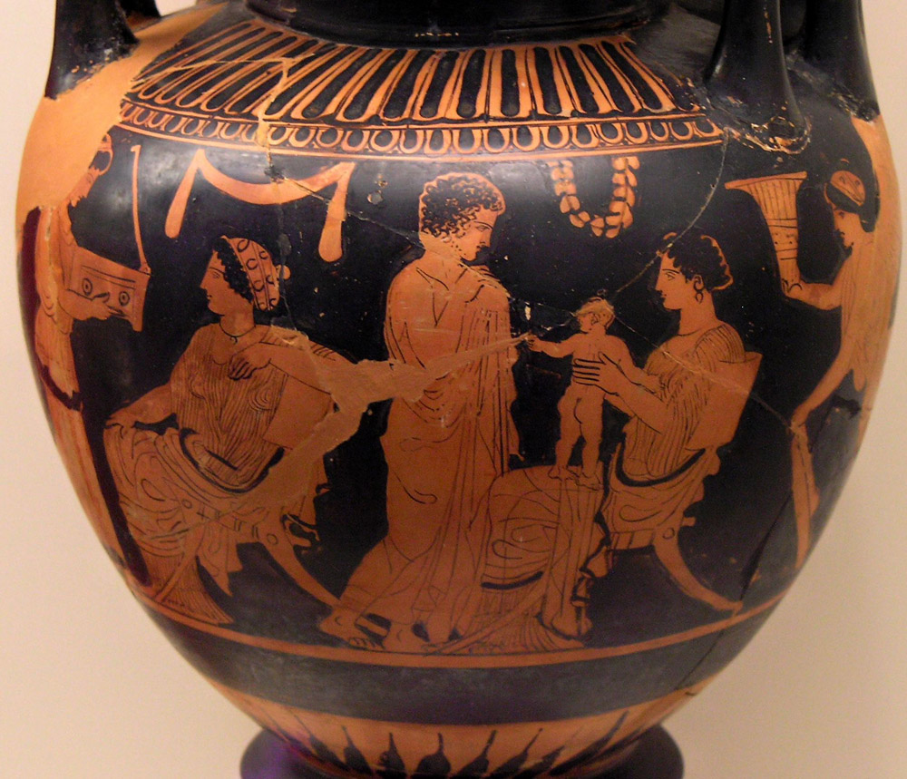
Source
Marsyas, NAMA Gynécée 2, Wikimedia Commons. Licence : CC BY-SA 2.5.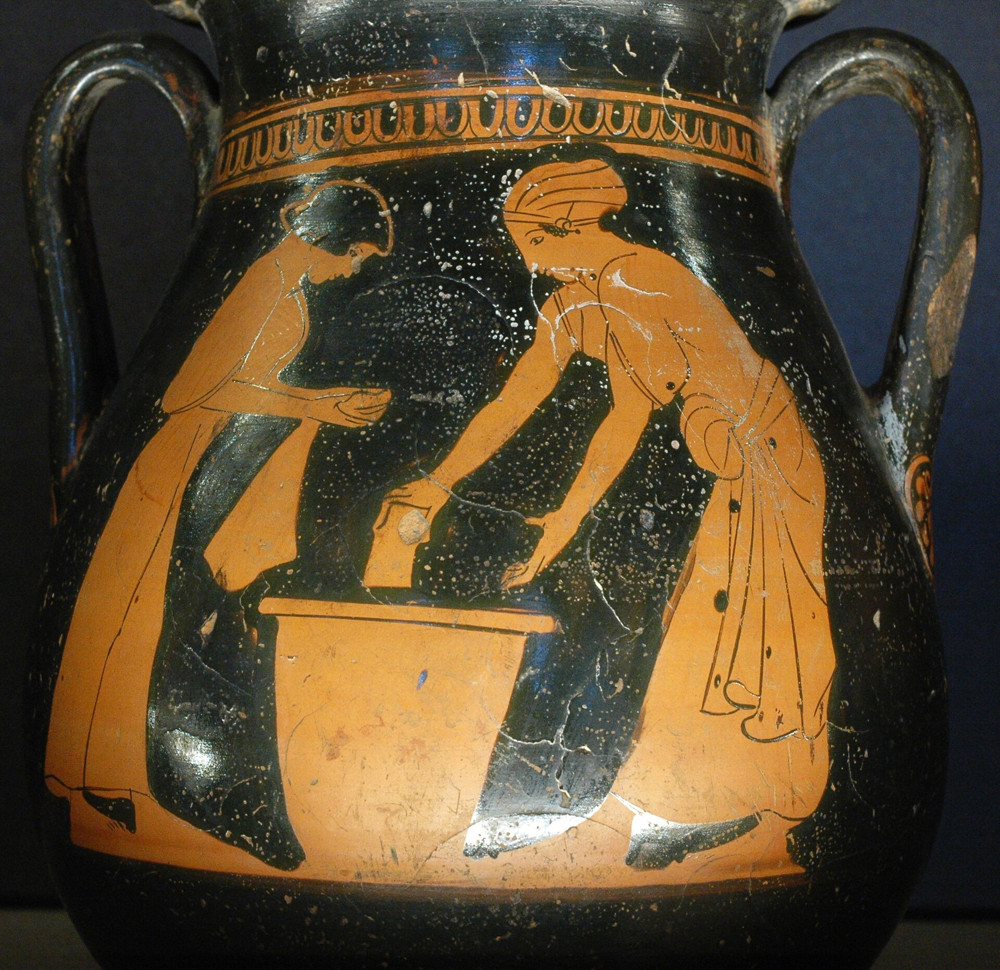
Source
Pan Painter, Clothes washing Louvre G547, Wikimedia Commons. Licence : Domaine public.Les enfants de citoyens et l'éducation
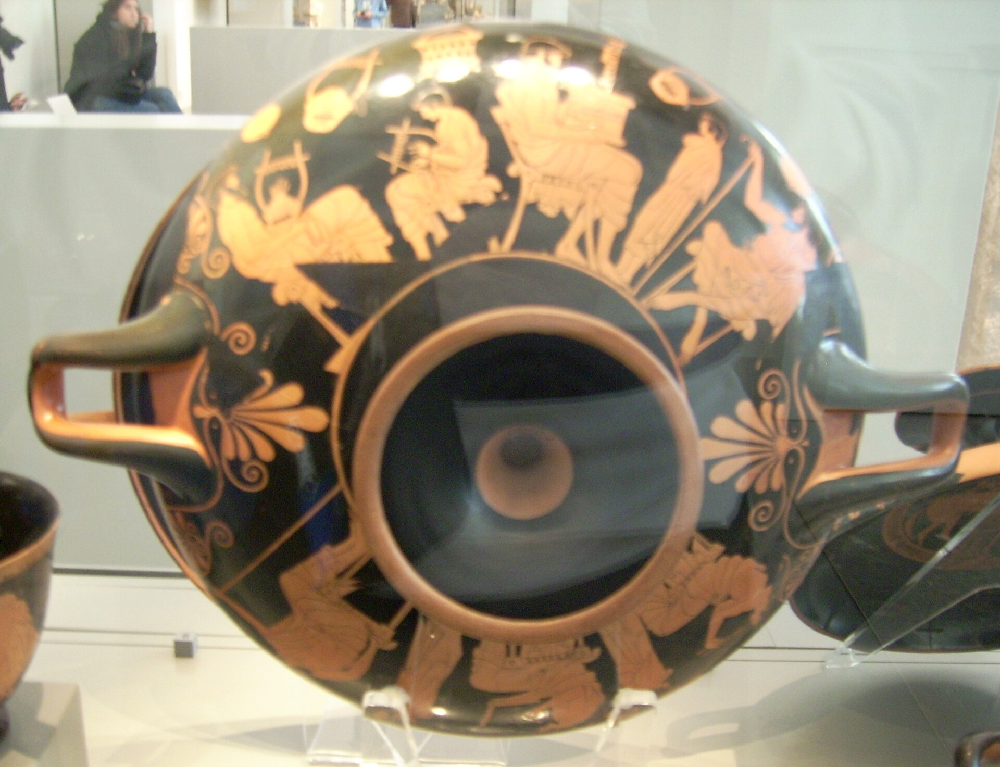
Source
Pottery Fan : photo of greek art created about 500 BC by Douris, Douris Man with wax tablet, Wikimedia Commons. Licence : Creative Commons BY-SA 3.0.Jusqu'à l'âge de 7 ans, garçons et filles reçoivent la même éducation au gynécée, avec leur mère et les esclaves. Ensuite, les garçons sont instruits par des maîtres privés, alors que les filles restent avec leur mère, qui leur apprend la lecture, l'écriture, le calcul, le chant, la danse et le filage de la laine. Vers 14 ans, elles savent tout ce qu'il faut pour devenir une bonne épouse et prendre mari. Elles n'ont d'ailleurs pas leur mot à dire dans ce mariage, arrangé avec un homme qui peut avoir trois fois leur âge.
Les enfants, garçons ou filles, apprennent les poèmes d'Homère, l'Iliade et l'Odyssée, et les récitent accompagnés de musique. Les garçons apprennent aussi à chanter, à danser et à jouer d'un instrument. À partir de 14 ans, ils pratiquent des sports et participent à des épreuves athlétiques. Ils écoutent les enseignements des philosophes, composent des discours et s'exercent à débattre afin de devenir de bons citoyens. À 18 ans, ils commencent leur formation militaire ou travaillent aux affaires de leur père.
Les archéologues ont retrouvé à Corinthe une poupée dansante en terre cuite datée d'environ -350. Il s'agit d'un jouet de petite fille offert en offrande funéraire : plusieurs poupées semblables ont été retrouvées dans les tombes de jeunes filles mortes avant l'âge du mariage, vers 12 ou 13 ans. À l'époque, les poupées symbolisent l'enfance : elles sont offertes à des divinités vierges, avec une mèche de cheveux de la jeune fille, pour signifier que celle-ci est prête à devenir adulte et à se marier. Le mariage marque la fin de la vie aux côtés de ses parents : la jeune fille grecque change de maison, d'oikos.
L'éducation que reçoivent les enfants de citoyens est un droit, un privilège. Les enfants de métèques et d'esclaves n'ont pas la chance d'avoir une telle éducation.
Les métèques
Dans la Grèce antique, ceux qui habitent Athènes sans y être nés sont appelés métèques. Ce sont des étrangers. La plupart sont des artisans ou des commerçants, et certains d'entre eux sont très riches : c'est sur eux que repose la prospérité économique d'Athènes. Ils représentent près de 20 % de la population totale athénienne. Ils sont obligés de payer des taxes et des impôts et de faire leur service militaire, comme les citoyens. Cependant, aucun métèque ne peut acheter ou posséder une terre ou une maison, et ils n'ont aucun droit politique.
Les esclaves
Dans la société athénienne, les esclaves forment plus du quart de la population totale. Ils n'ont aucun droit politique. Dans la plupart des cas, ce sont des prisonniers ramenés de la guerre, ou encore des enfants d'esclaves. Ils peuvent être vendus au marché comme de la marchandise et appartiennent à leur propriétaire.
On peut les utiliser comme pédagogues, pour accompagner les enfants à l'école, les aider à faire leurs devoirs et leur apprendre les bonnes manières. Le plus souvent, on les emploie pour les travaux les plus difficiles, dans les mines et sur les chantiers publics. À la maison, ils accomplissent les travaux quotidiens. Ils peuvent aussi servir de policiers au service de l'État. Ceux qui travaillent dans les mines mènent une vie misérable, mais d'autres reçoivent un salaire et peuvent être affranchis par leur propriétaire : ils deviennent alors métèques.
La mythologie grecque
Les Grecs sont polythéistes : ils honorent de nombreux dieux et déesses, qui forment une grande famille installée sur le mont Olympe. Ces divinités ressemblent aux humains, ressentent la jalousie, la colère et l'affection, mais elles sont immortelles et interviennent dans la vie des mortels.
Les valeurs de la société grecque : Héra et Artémis
Les déesses en disent long sur les valeurs de la société. Héra, la femme de Zeus, est la protectrice des femmes et la déesse du mariage, gardienne de la fécondité du couple. Elle insiste sur la nécessité de concevoir un enfant dans les liens du mariage : un enfant conçu hors de ces liens n'aurait pas la possibilité de faire partie de la cité. Le fils d'un citoyen et d'une citoyenne est d'ailleurs présenté publiquement, devant les membres de la cité, pour prouver qu'il est né dans le mariage.
Artémis, fille de Zeus, est la déesse de la nature sauvage, de la chasse et des accouchements. Elle représente l'adolescence, l'insouciance et la liberté : la campagne, la chasse et l'entraînement s'opposent au monde adulte de la ville, de la vie politique, de la guerre et des responsabilités familiales. Les jeunes filles grecques se marient habituellement entre 12 et 14 ans, avec un mari qui a en moyenne plus de 28 ans.
L'oracle de Delphes
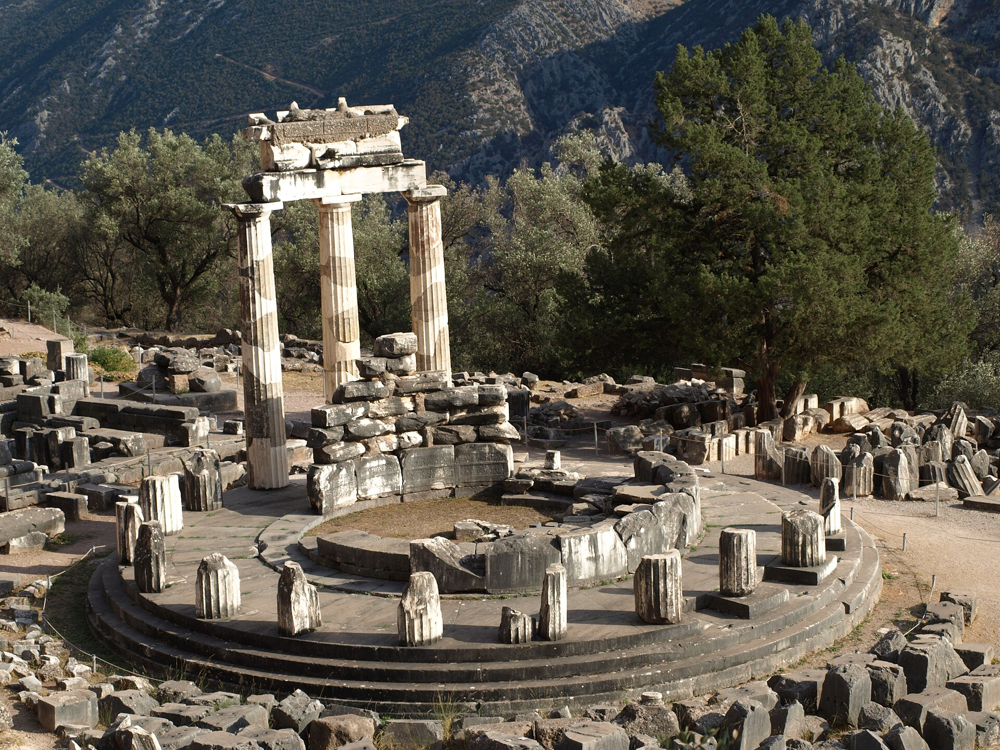
Source
Mr.checker, Tholos Athena Pronaia, Wikimedia Commons. Licence : Creative Commons BY-SA 3.0.L'oracle de Delphes était un des lieux les plus sacrés et respectés de la Grèce antique. Situé sur le mont Parnasse, ce sanctuaire était dédié au dieu Apollon. Au coeur du site se trouvait la Pythie, une prêtresse qui servait d'intermédiaire entre les dieux et les hommes. Assise sur un trépied sacré au-dessus d'une fissure dans le sol, elle inhalait des vapeurs et entrait en transe, ce qui lui permettait de transmettre les messages d'Apollon.
Les Grecs consultaient l'oracle pour obtenir des réponses à leurs questions sur des sujets variés, comme la guerre, les récoltes ou les voyages. Les réponses, souvent énigmatiques, étaient interprétées par des prêtres, laissant place à diverses interprétations. Cette pratique reflète l'importance des dieux et des croyances dans la Grèce antique.
L'Odyssée d'Homère
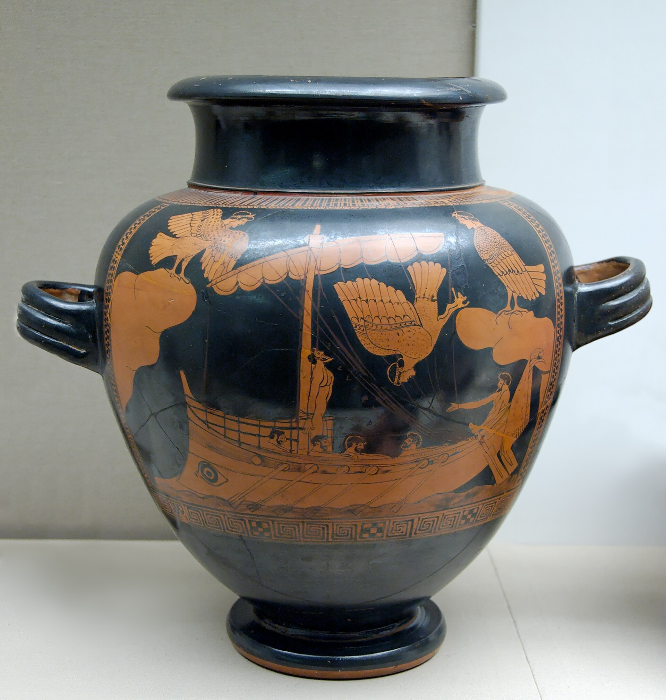
Source
Siren Painter (eponymous vase), Odysseus Sirens BM E440, Wikimedia Commons. Licence : Domaine public.L'Odyssée est un des textes les plus célèbres de la littérature antique, écrit par Homère, un poète grec qui a vécu il y a environ 2 800 ans. C'est un poème épique qui raconte les aventures d'Ulysse après la guerre de Troie : il cherche à rentrer chez lui, sur l'île d'Ithaque, où sa femme Pénélope et son fils Télémaque l'attendent depuis vingt ans.
Dans l'Odyssée, les dieux interagissent directement avec les humains. Athéna, la déesse de la sagesse, protège Ulysse, tandis que Poséidon, le dieu de la mer, le punit parce qu'il a blessé son fils, le cyclope Polyphème. Le poème met aussi en scène les sirènes, qui séduisent les marins avec leur chant pour les attirer à leur perte, et Charybde et Scylla, des monstres marins qui représentent les choix impossibles à éviter.
La philosophie dans la Grèce antique
La philosophie est née d'un désir de comprendre le monde et de répondre à des questions sur la vie, la justice, le bonheur et même l'univers. À une époque où les mythes et les dieux apportaient des réponses, certains Grecs ont commencé à chercher des réponses différentes en utilisant la raison et l'observation plutôt que les croyances et les récits mythologiques. Ils voulaient comprendre le pourquoi et le comment. Le mot philosophie signifie d'ailleurs « amour de la sagesse ».
Socrate
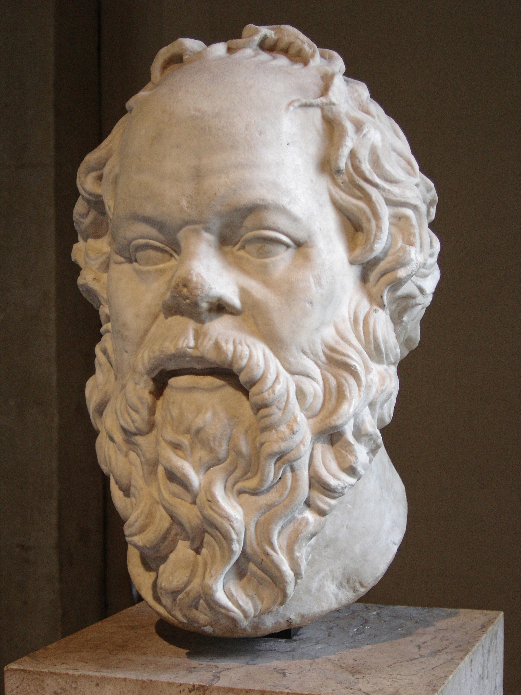
Source
Copy of Lysippos (?), Socrates Louvre, Wikimedia Commons. Licence : Domaine public.Pour Socrate, la philosophie était une façon de vivre, un chemin pour devenir une meilleure personne. Il se promenait dans les rues d'Athènes et posait des questions aux gens pour les amener à réfléchir : qu'est-ce que la justice? Qu'est-ce que le bien? Pour lui, une vie sans examen ne vaut pas la peine d'être vécue. Il ne prétendait pas tout savoir, mais pensait qu'en discutant, on pouvait mieux comprendre ce qui est juste ou bon. Ses questions dérangent les puissants : accusé de corrompre la jeunesse, il est condamné à mort par le tribunal de l'héliée en -399 et meurt en buvant la ciguë, un poison.
Platon
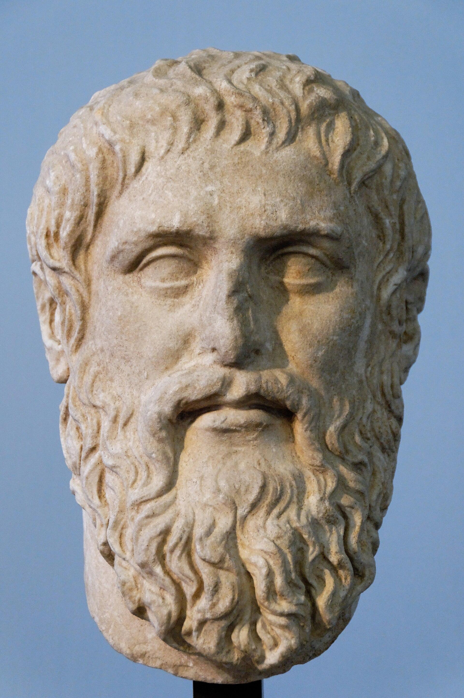
Source
Marie-Lan Nguyen, Plato Silanion Musei Capitolini MC1377, Wikimedia Commons. Licence : CC BY 2.5.Platon, un élève de Socrate, a poursuivi ces idées. Il a imaginé un monde idéal où tout avait une forme parfaite. Par exemple, il disait qu'il existe une « idée » parfaite de la justice, et que tout ce que nous voyons n'en est qu'une copie imparfaite. Il croyait aussi que les philosophes devraient gouverner la société, car ils étaient les seuls à chercher véritablement la vérité. Pour transmettre sa pensée, il fonde à Athènes une école célèbre, l'Académie, et rédige des dialogues qui mettent en scène son maître Socrate.
Aristote
Source
Manuela Gößnitzer, Kunsthistorisches Museum,Aristoteles, Wikimedia Commons. Licence : Creative Commons BY-SA 4.0.Aristote, le disciple de Platon, avait une approche différente. Il pensait qu'on pouvait comprendre le monde en l'observant attentivement. Il s'intéressait à tout : la biologie, la politique, l'éthique, l'art. Pour lui, le but de la vie était de trouver le juste équilibre, qu'il appelait la voie du milieu : le courage, par exemple, se trouve entre deux extrêmes, la peur et l'imprudence. Aristote fonde sa propre école, le Lycée, et devient le précepteur d'un jeune prince macédonien qui marquera l'histoire : Alexandre le Grand.
Le commerce et l'agora
En Grèce et dans l'ensemble de la mer Égée, les échanges commerciaux existent dès l'âge du bronze. La présence de poteries et de biens précieux comme l'or, le cuivre et l'ivoire, retrouvés loin de leur lieu de production, atteste du réseau d'échanges qui existait entre l'Égypte, l'Asie, la Grèce continentale et des îles telles que la Crète, Chypre et les Cyclades.
À partir du 5e siècle av. J.-C., le port du Pirée devient le centre de commerce le plus important de la Méditerranée et acquiert la réputation d'être l'endroit où l'on trouve tous les types de marchandises sur le marché, l'agora. Grande place publique d'Athènes, l'agora réunit le marché, les boutiques et les édifices publics : c'est le coeur de l'espace public athénien.
Les mines d'argent du Laurion
Une grande partie de cette richesse commerciale repose sur les mines d'argent du Laurion, au sud de l'Attique. L'argent qu'on en extrait fournit à la cité de quoi frapper sa monnaie, les tétradrachmes ornés de la chouette d'Athéna, acceptés partout en Méditerranée, et c'est aussi lui qui finance la construction de la flotte de trières, le coeur de la puissance navale athénienne. Des milliers d'esclaves y travaillent, dans des galeries étroites et dans des conditions très dures : la prospérité d'Athènes repose largement sur leur labeur.
La guerre du Péloponnèse
La guerre du Péloponnèse, de -431 à -404, est l'un des conflits les plus importants de l'Antiquité : elle marque la fin de l'âge d'or d'Athènes. Le conflit oppose deux blocs majeurs aux idéologies et aux forces opposées : la ligue de Délos, menée par Athènes, et la ligue du Péloponnèse, menée par Sparte. L'historien Thucydide, qui a documenté la guerre, explique que sa cause était la peur de Sparte face à la fondation croissante de colonies par Athènes. Les combats s'étendent sur près de trente ans, alternant entre invasions annuelles de l'Attique par Sparte et raids maritimes athéniens le long du Péloponnèse.
Au début de la guerre, le stratège Périclès adopte une stratégie de repli : les Athéniens se réfugient à l'intérieur de l'enceinte fortifiée. Dans cette proximité étouffante éclate, en -430, une épidémie connue sous le nom de peste d'Athènes. Environ un quart à un tiers de la population périt, et Périclès lui-même succombe à la maladie en -429. Thucydide décrit un effondrement moral et social, où la peur de la mort immédiate pousse les citoyens à abandonner les lois et la religion. Affaiblie par cette tragédie, Athènes finit par capituler en -404, et Sparte impose alors sa domination.
La cité-État oligarchique de Sparte
Sparte est une cité-État née de la conquête dorienne. Au 7e siècle av. J.-C., les conquérants ne représentent plus qu'une infime minorité par rapport aux vaincus, environ 8 % de la population. Sparte se replie alors sur elle-même et se fige pour toujours sous les traits d'une cité militaire et oligarchique.
Une vie vouée à la guerre
Toute la vie de Sparte est dominée par une caste de guerriers, seuls citoyens, qui s'appellent les Égaux. Ils sont à peine 5 000 sur une population de 250 000. À partir de l'âge de 7 ans, le citoyen spartiate appartient à l'État, qui le prépare à devenir soldat. Le mariage n'a qu'un seul but dans cette société : procréer de robustes enfants. Un mari, c'est un soldat; une épouse n'est qu'une mère de soldat; un enfant n'est qu'un futur soldat. Jusqu'à 30 ans, le citoyen spartiate vit pratiquement en caserne avec son unité militaire, et jusqu'à 60 ans, il doit participer chaque jour aux exercices guerriers.
En dehors de ces citoyens, déjà inégaux en droits, on retrouve les périèques, des paysans libres sans droits civiques, et surtout les hilotes. Ce sont des esclaves, au nombre de 200 000. La loi les ignore : on peut les tuer impunément, et chaque année, la cité leur déclare officiellement la guerre afin d'exercer ses jeunes soldats.
Les institutions politiques de Sparte
L'Assemblée est le rassemblement des Égaux, réuni à dates fixes. Les projets mis en forme par la gérousia lui sont soumis : elle les approuve ou non, sans les discuter, et vote les décisions par acclamations. La gérousia est une assemblée de 28 hommes âgés de plus de 60 ans, élus à vie par acclamation à l'Assemblée. Choisis en fonction de leur vertu militaire, les gérontes appartiennent pour la plupart aux grandes familles de Sparte. Ils jouent un rôle politique éminent : ils sont les seuls à pouvoir préparer les lois, gèrent toutes les affaires de politique intérieure et ne rendent pas de comptes.
Les cinq éphores, enfin, sont chargés de surveiller les rois et les habitants de la cité, notamment pour s'assurer du respect des traditions. Ils peuvent infliger des amendes, des peines de prison, même aux rois, et ordonner des exécutions. Ils sont également chargés des affaires étrangères, exécutent les décisions de l'Assemblée, ordonnent la mobilisation et prennent les décisions urgentes.
Athènes ou Sparte : deux cités, deux modèles
Choisis un aspect
Clique sur une ligne pour lire les explications.
Applications d'apprentissage
Deux applications d'apprentissage, partagées par Mme Johanne Rodrigue, te permettent de vérifier tes connaissances.
Sources
- Service national du RÉCIT en univers social
- Par ici la démocratie, Assemblée nationale du Québec
- Alloprof, La démocratie athénienne
- Aristote, Constitution d'Athènes, chapitre 44, traduction de F. Kenyon
- Hérodote, Histoires, livre VII, 144, traduction de G. C. Macaulay
- World History Encyclopedia, Athenian Democracy
- World History Encyclopedia, L'ostracisme
- World History Encyclopedia, Themistocles
- World History Encyclopedia, Sparta
- Larousse, Périclès
- Wikipédia, Graphè paranomon
- Bibliothèque de l'Assemblée nationale, Étapes de cheminement des projets de loi
- Par ici la démocratie, Démystifier les commissions parlementaires
- Gazette officielle du Québec, avis de consultation générale, 2013
- Loi modifiant la Loi électorale afin de prévoir des élections à date fixe, 2013
- CTV News, Future Quebec elections to be held on first Monday in October, 2013
- Gouvernement du Québec, Élections provinciales de 2026 : un scrutin aura lieu le 5 octobre
- Élections Québec, Résultats et statistiques
- Élections Québec, Voter au Québec
- Institut de la statistique du Québec, Perspectives démographiques du Québec et de ses régions, mise à jour 2026
- Par ici la démocratie, Femmes et vie politique, ligne du temps
- Justice Canada, Découvrez la Charte
- Revue générale de droit, Do Inferior Tribunals have the Power to declare a Law Unconstitutional?, 1988